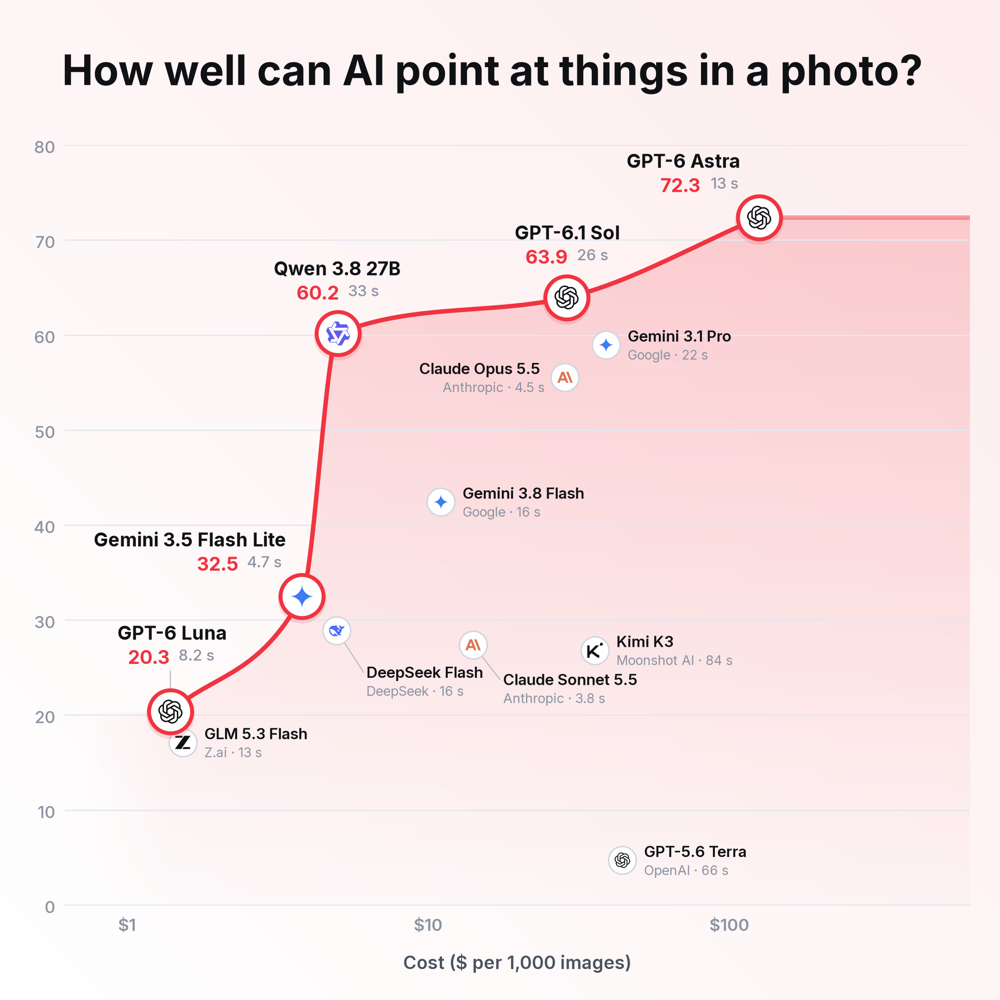

Real point-localisation pilot · four tasks · human-approved references · medium thinking · quality is tolerance-average F1, out of 100. Times are seconds per image.
Provisional comparison: GPU prices for the specialist models are estimates (pointing models: one image at a time, no load test, so overstated) and some timings came from a shared GPU. Florence-2 appears twice: its two text modes, because nothing documents which one means “every object”. The curve involving them is illustrative, not a validated best-value frontier.

13 language models, each tested on all four tasks.
Source and limits
Rendered directly by scripts/draw_charts.py --style editorial, using segbench/chart_editorial.py. No replacement chart styling. Run python scripts/plot_point_pilot.py to regenerate both versions.
These are reference-point proximity scores, not segmentation or point-inside-object scores. There is one answer per language model/task, and malformed responses score zero. Costs are public-price equivalents; OpenAI and Anthropic calls used subscriptions.
RF-DETR attempted cows only, so it is excluded from the four-task plot. SAM 1/2 pairs reuse finder outputs and do not enter separately. The smooth curve is a visual guide between measured models, not evidence of intermediate models.